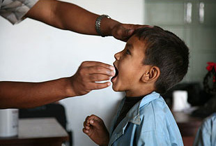

国家重点研发计划——重要热带病传播相关的入侵媒介及其病原体的生物学特性研究
National Research and Development Plan: Research on Biological Characteristics of the Tropical Disease Related Invasion vectors and Pathogens
国家重点研发计划——重要热带病传播相关的入侵媒介及其病原体的生物学特性研究
National Research and Development Plan: Research on Biological Characteristics of the Tropical Disease Related Invasion vectors and Pathogens
 热带病包括只发生，或主要发生在热带地区的所有疾病。实际上，通常认为这个词是指滋生于湿热环境中的传染病，如疟疾、利什曼病、血吸虫病、盘尾丝虫病、淋巴丝虫病、恰加斯病、非洲锥虫病和登革病等。